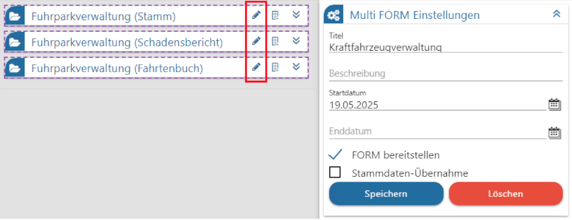
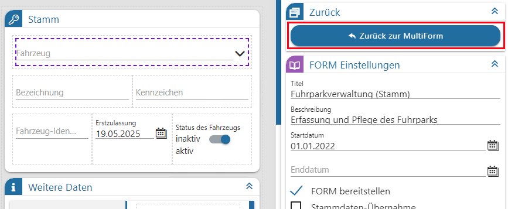

Sollte die Notwendigkeit bestehen, eine enthaltene FORM zu überarbeiten, so kann dies direkt aus der Multi FORM heraus mit einem Klick auf das Stiftsymbol getätigt werden.

Innerhalb des FORM Designers wechselt die Sicht auf die zuvor selektierte FORM. Die ursprüngliche Multi FORM wird vor diesem Wechsel gespeichert (eine Bestätigung dazu ist am unteren Rand des Programmfensters zu sehen).
Über die linke Komponentenauswahl, den mittleren Editierbereich, bzw. die rechten Einstellungen können Änderungen an der gewünschten FORM vorgenommen werden.
Aus diesen Einstellungen heraus gelangt der Benutzer über den Button "Zurück zur MultiForm" (aus dem Bereich "Zurück") wieder zur ursprünglichen Multi FORM.

Im Zuge dieser Aktion werden vorgenommene Änderungen innerhalb der einzelnen FORM gespeichert (auch hier gibt eine Meldung am unteren Fensterrand darüber Auskunft).